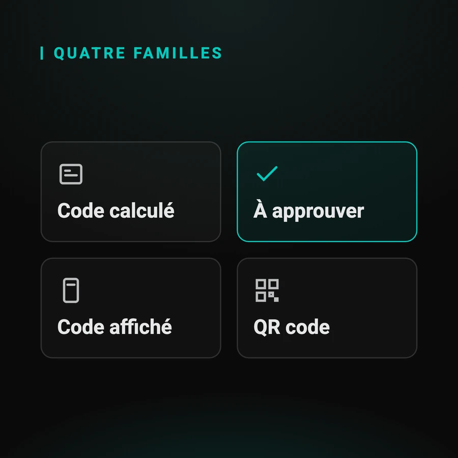
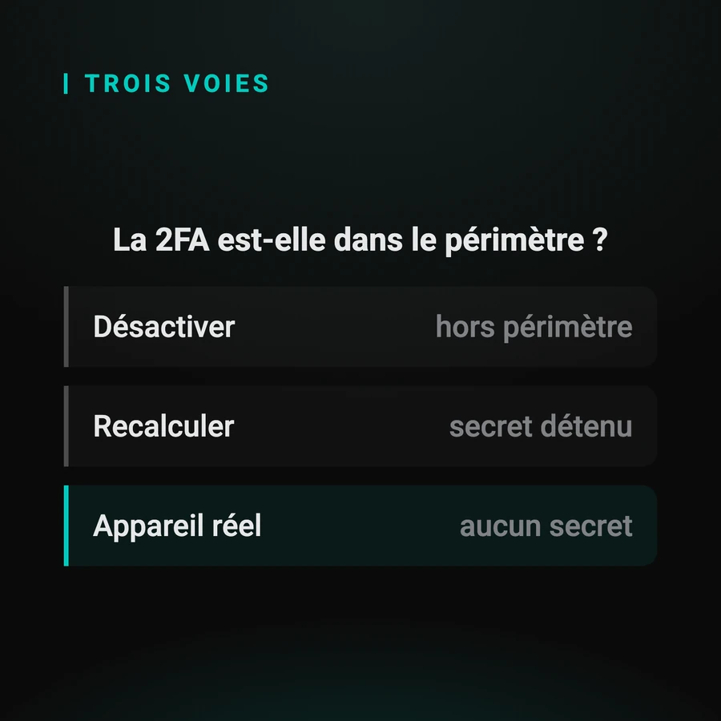

Automatiser la double authentification dans vos tests
La double authentification est le dernier verrou manuel de beaucoup de chaînes de tests. Ce guide fait le tour du sujet : ce qui bloque exactement, les quatre familles de second facteur, ce qu'un navigateur sait faire et où il s'arrête, et les trois approches possibles pour franchir l'étape.
Par Sylvain Perez, créateur de Q-Bot. Mis à jour le
Qu'est-ce qui bloque exactement dans une chaîne de tests ?
Un scénario automatisé sait remplir un identifiant et un mot de passe. Il ne sait pas approuver une demande qui arrive sur un téléphone. La campagne s'arrête donc à la porte d'entrée, et tout ce qui vient après reste non testé, quelle que soit la qualité du reste de la suite.
Le symptôme se lit dans un rapport de campagne : un grand nombre de scénarios en échec, tous au même endroit, et la même trace. Ce n'est pas la suite qui est fragile, c'est qu'elle ne peut pas franchir une étape.
Ce que ça coûte se mesure en heures d'astreinte, et c'est le sujet du guide sur le coût de l'étape manuelle. Le symptôme lui-même est détaillé dans « pourquoi vos campagnes de nuit s'arrêtent au login ».
Quelles sont les quatre familles de second facteur ?
Un code calculé, une demande à approuver, un code affiché nulle part ailleurs, et un QR code à scanner. Ces quatre familles ne s'automatisent pas de la même façon, et c'est la seule distinction qui compte pour décider d'une approche.

Dans l'ordre de difficulté croissante :
- un code calculé (TOTP) : Google Authenticator, Microsoft Authenticator. Il dérive d'un secret partagé et de l'heure, selon la RFC 6238
- une demande à approuver : LuxTrust Mobile, itsme. Aucun code, un geste sur l'appareil enrôlé
- un code affiché et lisible uniquement sur l'écran de l'application
- un QR code présenté sur un écran, que l'appareil doit venir scanner
La première famille se calcule. Les trois autres non, et c'est toute la différence.
Que sait faire un navigateur, et où s'arrête-t-il ?
Selenium, Cypress et Playwright pilotent le document affiché, et ils le font très bien. Ils n'ont aucune prise sur une notification système ni sur une application native : aucun sélecteur n'atteint l'écran d'un téléphone. Ce n'est pas une faiblesse, c'est leur périmètre.
Selenium, Cypress et Playwright agissent sur le DOM. Dès que l'étape sort du navigateur, ils sont hors de leur domaine, et aucune option ne les y ramène.
La documentation de Selenium le dit elle-même et conseille de désactiver la double authentification en test. C'est une recommandation défendable, dont le guide dédié détaille les cas où elle s'applique et ceux où elle coûte cher.
Quelles sont les trois approches possibles ?
Désactiver le second facteur, recalculer le code depuis son secret partagé, ou piloter un appareil réel. Chacune a un domaine où elle est le bon choix, et le domaine se lit sur une seule question : existe-t-il un secret que vous détenez ?

Les trois, avec leur domaine :
- désactiver : simple et gratuit, dès que le parcours de connexion sort du périmètre du test
- recalculer : quelques lignes de bibliothèque, dès que vous détenez le secret partagé
- piloter un appareil réel : la seule voie quand il n'existe aucun secret à obtenir
Le troisième cas est celui des demandes à approuver et des applications d'identité souveraine. Pourquoi il n'y a rien à calculer y est expliqué dans « automatiser la 2FA sans clé secrète partagée », et les familles d'outils qui s'en chargent sont comparées dans « quel outil pour tester la 2FA sur appareil réel ».
À quoi ressemble l'appel depuis un test ?
À une requête HTTP, et rien de plus. Le test déclenche le franchissement de l'étape, attend la réponse, et reprend son cours. Aucun SDK à intégrer dans l'application testée, aucun agent à installer, aucune clé d'API à distribuer dans la chaîne d'intégration.
# L'identifiant et le mot de passe sont saisis,
# le second facteur attend une validation.
import requests
requests.get(
"http://q-bot.local:8000"
"/scenarios/42/execute"
)
# L'étape est franchie, le test reprend.
driver.find_element(
By.ID, "dashboard"
).is_displayed()Le détail des points d'entrée est sur la fiche technique, et les exemples par outil couvrent Cypress, Playwright, Robot Framework et JUnit. Un cas complet, de bout en bout, est déroulé dans le guide LuxTrust.
Que répondre à l'équipe sécurité ?
C'est souvent la question qui décide, et elle ne vient pas du testeur. Elle porte sur trois points : où vont les données manipulées pendant un test, quels secrets circulent, et ce qui sort du réseau. Les trois ont une réponse courte et vérifiable.
Résumé : les scénarios et leurs captures restent dans le boîtier, sur votre réseau ; aucune clé d'API n'est à distribuer ; aucune connexion internet n'est nécessaire pendant l'exécution des tests.
Le détail, y compris ce que cette approche ne couvre PAS, est dans « sécurité, conformité et données de test ».